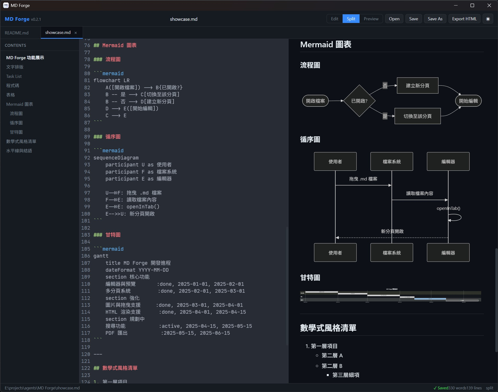

MD Forge
本地優先的桌面 Markdown 編輯器。
即時預覽、多分頁、Mermaid 圖表，所有資料僅存於本機。
A local-first desktop Markdown editor.
Live preview, multi-tab, Mermaid diagrams — your data stays on your machine.

本地優先的桌面 Markdown 編輯器。
即時預覽、多分頁、Mermaid 圖表，所有資料僅存於本機。
A local-first desktop Markdown editor.
Live preview, multi-tab, Mermaid diagrams — your data stays on your machine.

寫作需要的一切，沒有多餘的東西。 Everything you need to write. Nothing you don't.
同時開啟多個文件，相同檔案不重複開啟。關閉所有分頁後自動回到首頁。 Open multiple documents at once. Duplicate tabs are prevented. Closing all tabs returns to the home screen.
Edit / Split / Preview 三種模式隨時切換，Split 模式下左右同步捲動。 Switch between Edit, Split, and Preview modes anytime. Split mode keeps editor and preview in sync.
流程圖、循序圖、甘特圖等直接在 Markdown 中繪製，亮暗主題自動切換。 Render flowcharts, sequence diagrams, Gantt charts and more directly in Markdown. Auto theme-aware.
本機圖片（相對路徑）、網路圖片、Data URI Base64 圖片均可正確顯示。 Local images (relative paths), remote images, and Data URI Base64 images all render correctly.
自動從標題生成目錄，點擊跳至對應段落，支援中文等 Unicode 錨點。 Auto-generated table of contents. Click to jump to any heading. Full Unicode anchor support.
雙擊關聯開啟、拖曳進視窗、命令列傳入路徑，三種方式皆在同一視窗新分頁開啟。 Double-click, drag & drop, or pass a path via CLI — all open in a new tab within the same window.
亮色 / 暗色主題切換，字體大小、自動換行、設定皆持久化儲存。 Light and dark themes, font size, word wrap — all settings are persisted locally.
一鍵匯出為含完整樣式的獨立 HTML 檔案，直接在瀏覽器開啟分享。 Export to a self-contained HTML file with full styling. Open it in any browser and share it anywhere.
僅支援 Windows，更多平台未來規劃中。 Windows only for now. More platforms planned.
| 檔案File | 說明Description |
|---|---|
| ↓ MD.Forge_x64-setup.exe 建議Recommended | 安裝版Installer |
| ↓ MD.Forge_x64_en-US.msi | MSI 安裝包MSI Package |
| ↓ MD.Forge.exe | 免安裝版Portable |